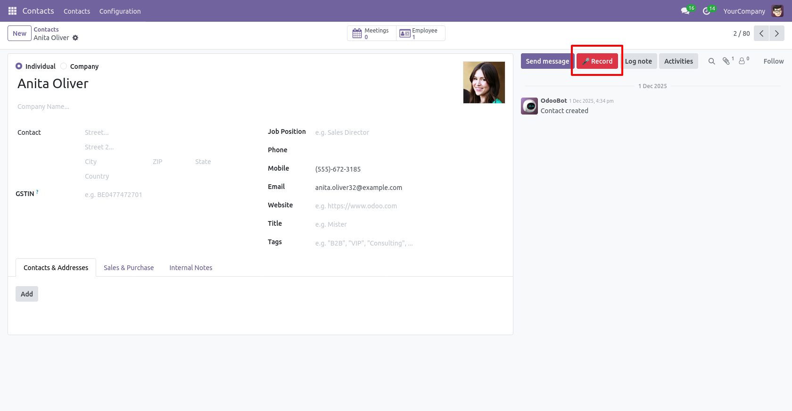
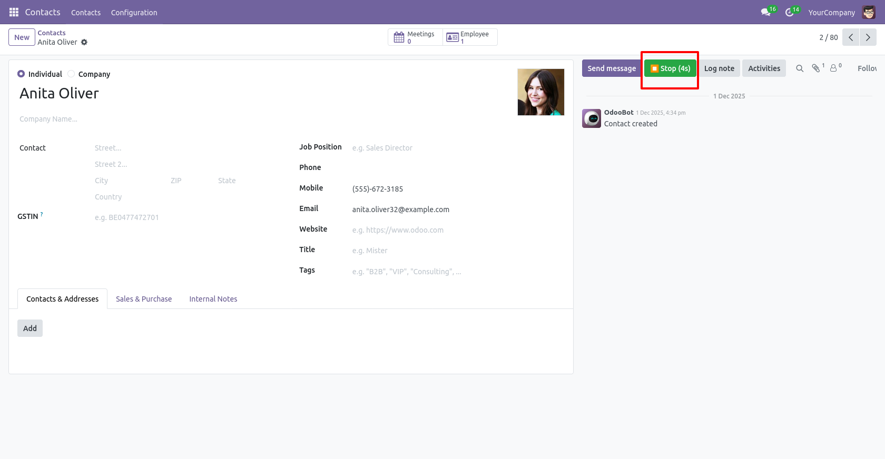
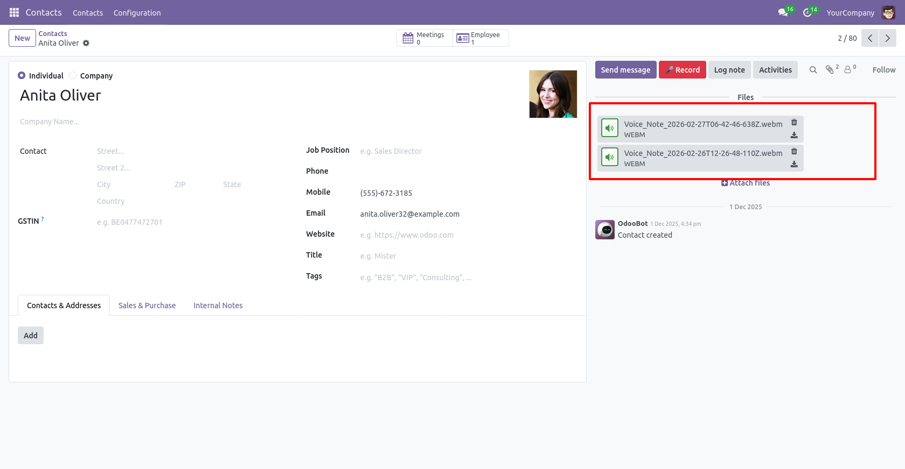

Typing long internal notes takes time. With Voice Chatter Note, users can instantly record audio messages directly from the chatter and attach them to any record.
Perfect for quick updates, field sales feedback, internal communication, and faster CRM follow-ups.


Works directly in the browser using secure Web Audio APIs. No third-party services required.
For support or customization, contact: niraj1107